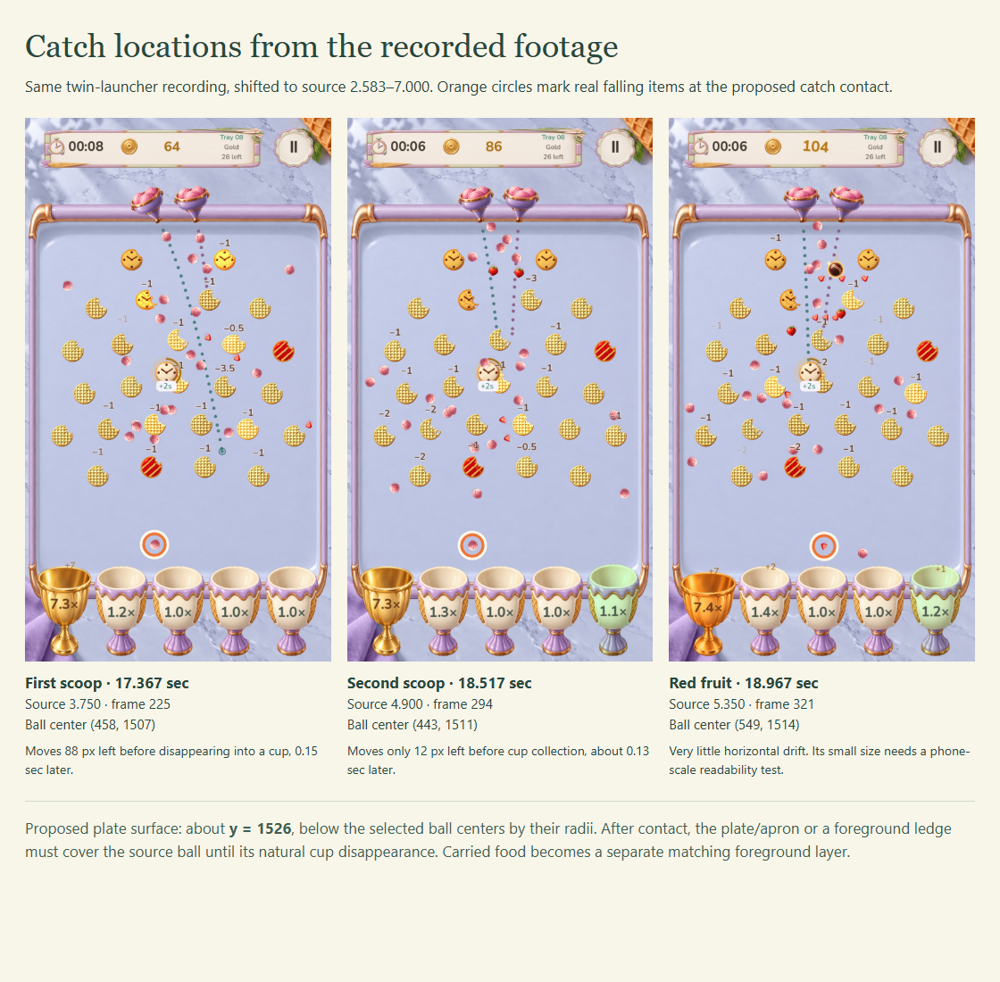
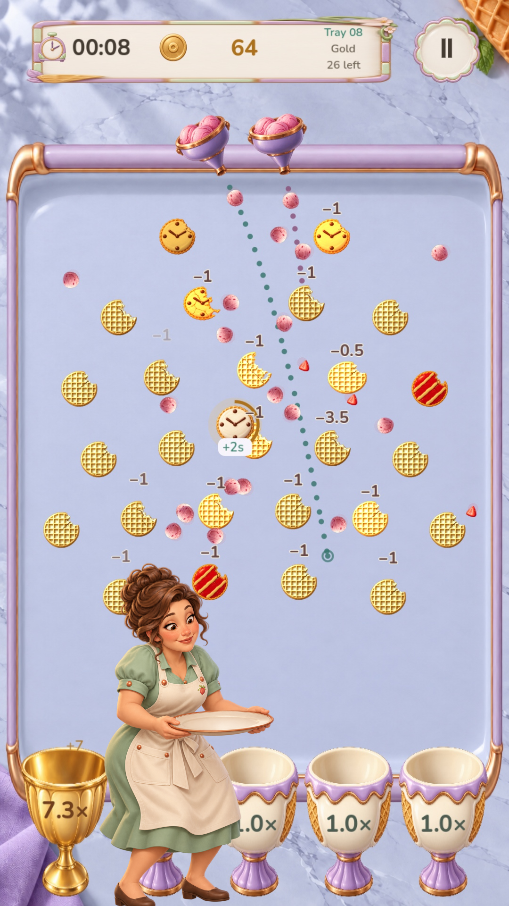
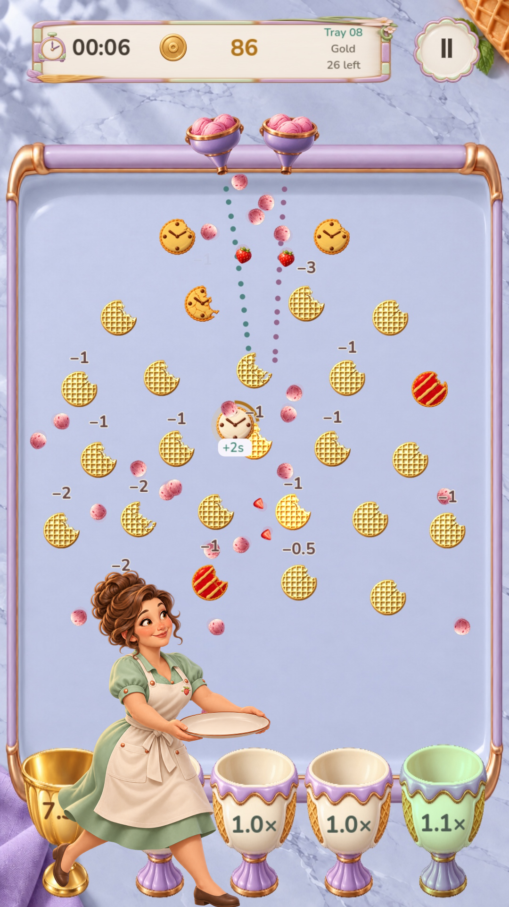
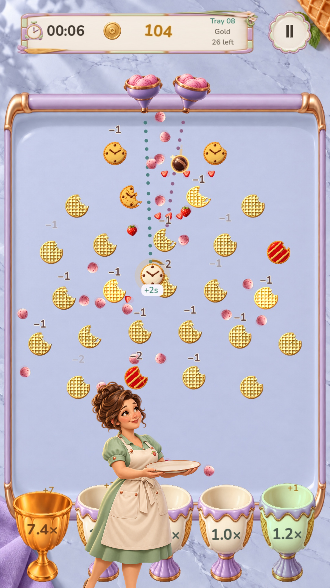
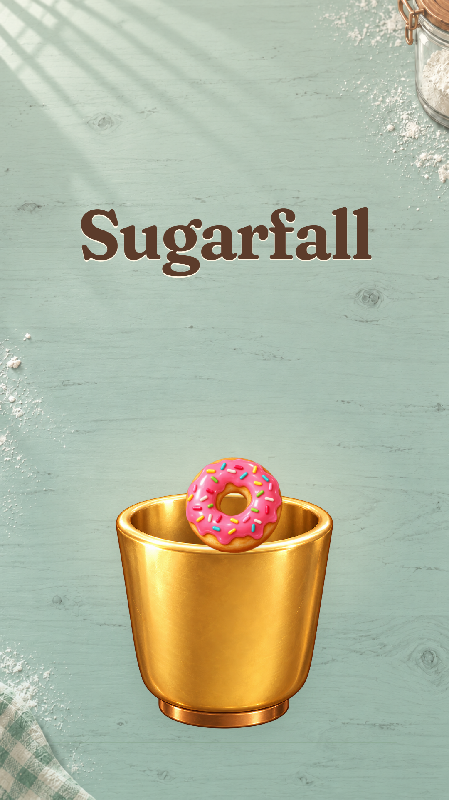
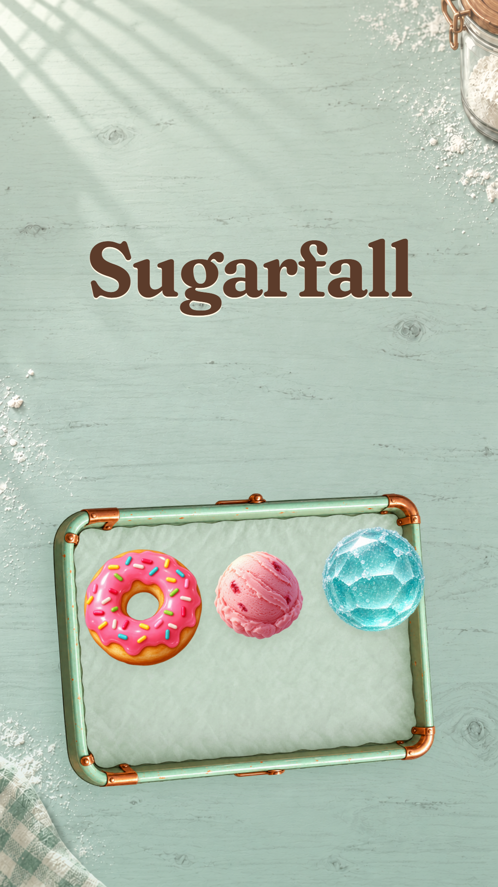

Mabel sees the treat, runs to it and catches it.
She is the baker collecting treats as they leave the board. The first catch takes concentration, the second happens during her recovery, and the third needs only a small adjustment. Then she leaves with the plate.
The V2 motion review uses these six painted poses, the recorded landing points and ending A. Watch the motion review, or use this page to compare the artwork and planning studies. All 23 clean handoff frames have passed visual review; final encoded-video verification is recorded separately.
Six painted key poses
Original character identity · clean natural cutout edges · separate food layers
V2 uses the six keys as painted stop-motion. The plate anchors, catch dips and separate carried-food layers are now composited over the footage. Pose 05 uses a slightly larger scale to keep her head height consistent. The two run drawings are individual action poses; they do not form an alternating-leg cycle. The footage supplies two scoops and one small red fruit.
The targets come from the recorded game
Same twin-launcher shot · source trim 2.583–7.000 sec

The motion plate surface is around y = 1526 in the 1080 × 1920 frame. The circles mark ball centers, not the top of the plate. Matching food sprites transfer to the plate at these contacts. A verified presentation-only clean pass hides the original balls after handoff while retaining their game physics. No duplicate source ball remains in the 23 reviewed handoff frames.
Initial scale and plate studies
Historical static blocking · empty plates before motion assembly



These earlier studies test size and plate height only. Their plates are intentionally empty and their source balls have no food handoff. The motion review adds the carried food and corrects pose 05's scale; these static studies are preserved as planning evidence.
Two ways to finish
Bundled Fraunces face verified · Mabel exits before the ending

A · The last catch
Match the final real cup catch into a closer painted cup composition. Let the food settle and hold the correctly typeset title through the musical tail.

B · The finished tray
A serving-tray finish connects more directly to Mabel's collecting task. For continuity with this catch sequence, the final food layers should become the two scoops and red fruit she actually collected.
Recommended: A for this edit. It finishes on the same cup-catching action the viewer has already watched. Choose B if the ending should complete Mabel's serving story; update its food layers to match the catches first. Keep the title still in either version.
In the V2 motion review
Six painted cutout keys, anchored plates, catch compression, two carried scoops and a red fruit, a lower-screen entry and exit, and ending A with the correct Fraunces font.
Verified and next review
All 23 source-ball handoff frames are clean. Sampled pose changes keep the carried food registered, and Mabel clears the screen before the next shot. The assembled video still requires its own timing, sound and ending review.